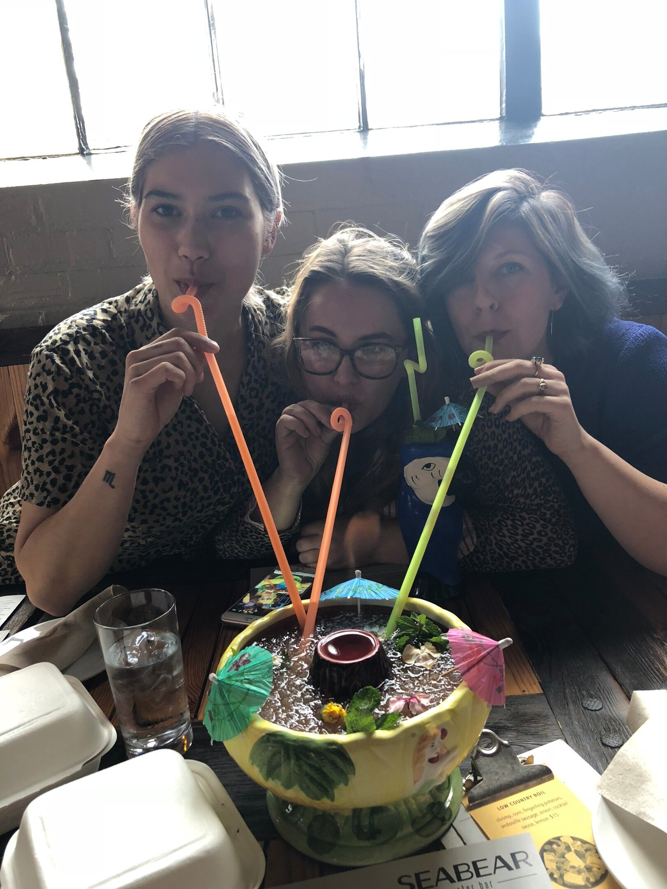
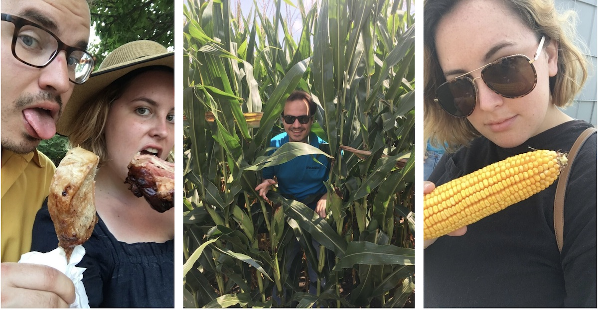

2018: A Year in review
2018 marks the year where I really got used to running a business. I’m now 2.5 years in, and it feels normal. I wake up, make coffee, walk the dogs and then sit down at my desk to start work. When I started my business, everything felt novel — working in my pajamas, having no boss, walking over to my couch for an afternoon nap. It felt like I was breaking the rules at a real career. Now, a few years later and still making it, this is what I do and it feels right. I’m not going anywhere!
January
My year begin at full-speed. I had a client list as long as my arm and everyone wanted their website built and launched yesterday. Five months earlier I overbooked myself and I still wasn’t caught up.
Launched Botanologos School of Herbal Studies at wildhealingherbs.com
Botanologos School of Herbal Studies is an herbalism program located in the Appalachian Mountains. The launch of the website celebrates their 25th year in operation. The new website features an interactive calendar, online shop and resources for herbal students.
Launched WOW Fitness at wowfitnessandwellness.com
Kevin Bailey became the new owner of WOW Fitness and wanted an updated website. This website features a calendar and online registration for the bootcamp.
What I Read: White Teeth by Zadie Smith
Feburary
Did I even lift up my head for breath this month? I don’t think so. I launched FIVE websites this month. I never want to do that again lol.
02/01/2018 - My 25th Birthday!
 Birthday drinks with friends at Seabear in Athens, GA
Also on my birthday led a lunch & learn with Jordan Burke on Website Fundamentals for the Athens Downtown Development Authority. After the lunch & learn I had celebratory cocktails at Seabear with friends (pictured above).
Launched Lamar Dodd School Art at art.uga.edu
This goes down as my biggest launch to date. We started the conversation of re-doing the School of Art’s website back in August 2015 and two years later we launched it. Does it take me two years to build a website? No. Can it take that long for the wheels of bureaucracy to allow it? Yes.
Thank you notes after speaking NMI’s Digital Brown Bag class
02/11/2018 - Spoke to New Media Institute’s Digital Brown Bag class on freelancing!
This was so much fun. Got to tell a theater of students that freelancing is a real career path and that I love it. Met a lot of talented students from this talk. Still get messages from students today about it!
Launched Greeline Rates at greenlinerates.com
Building and launching this website was smooth sailing. The client loved the design, got me content quickly and, before I knew it, we launched the site! If only every launch could go like this one.
Launched Inkwood Books at inkwoodbooks.com and inkwoodbooksnj.com
I love that bookstore websites have become my niche. Inkwood Books has a location in Tampa, Florida and Haddonfield, New Jersey and they are run by two sisters! It was great working with them.
Launched Velveteen Pink at velveteen-pink.com

This website is different and weird. I loved making this site for one of my favorite Athens bands.
What I read: Crazy Rich Asians by Kevin Kwan
March
I thought I was going to finally catch up and get a break this month LOL
Launched Winterville Station at wintervillestation.com
This got me started on real estate websites, which I love making because it combines my hobby of house hunting and website building together. I really admire the genius of JW York Homes for seeing the potential for incredible, fairly priced homes in Winterville, GA.
Joined the gym and started a 2x a week bootcamp class. We lived at my parents for half of 2017 during house renovations and a wonderfully stocked fridge took it’s toll!
Planted my first vegetable garden (with lots of help from my Grandma!)
 The first seedlings coming up in my raised vegetable garden
The first seedlings coming up in my raised vegetable garden
Read: The Mothers by Brit Bennett, Americanah by Chimamanda Ngozi Adichie
April
Launched Athentic Brewing Company at athenticbrewing.com
My dad and his business partner Mark are opening a brewery (expected opening June 2019) and of course I made the website because I’m the kid that makes websites in the family. I loved being able to do something for my dad after everything he’s done for me growing up!
Read: The Nix by Nathan Hill
May
Fired my first client. This was a big learning experience for me. I really liked my client as a person, loved her business and admired her as a business owner. However, the work environment was toxic and stressful with no end in sight. The money was good, but my days were horrible. When I got the website launched, I ended work with that client.
Trip to New York City with 8 women in my family 😮 that’s a lot of us, I know, but we had so much fun. In New York City with my mother, May 2018
Launched UGA Performing Arts Center website at pac.uga.edu
This was my second UGA website and my second biggest launch (which I did while I was in NYC with my family!) When I was approached for this website, I immediately knew how I wanted it to look and feel. It all came together and I’m really proud of this site.
Read: Swing Time by Zadie Smith
June
Launched Saturn Booksellers at saturnbooksellers.com
Saturn Booksellers, located in Gaylord, MI, won a small business contest and received funding for them to use as they wished — and they wanted a new website! After seeing my work with Avid Bookshop and Inkwood Books, they contacted me to update their site.
Went to Charleston for five days with my best friend Dani to dogsit my brother’s dog. I will drop anything at anytime to dogsit in Charleston — who wouldn’t?? In Charleston with my friend Dani. My brother’s dog Georgia on the right
July
Finally FINALLY caught up with work and no longer overbooked.
I got overbooked in early August 2017 and it took an entire year of full-throttle working to get everything done. I made good money but I didn’t have the quality of life I wanted. I found that my whole thinking brain was consumed by work. July marked the beginning of my second half of 2018 — where I slowed things down, relaxed and was mindful to not get overbooked again.
Added a second pug to our family, Cooper, a 3 year old pug from the Rescue Ranch. Look at this cute pug named cooper!
His original owners wanted to use him as a stud for breeding, but when that didn’t work out they surrendered him. Jeff and I are so lucky Cooper is in our lives. We love him (and Daisy!) so so much.
Read: The People in the Trees by Hanya Yanagihara
August
Started my new portfolio site. I finally had time to work on this!
Went to Iowa with my family for the Iowa State Fair. Brought my boyfriend Jeff along! Introduced him to the farmer life.  Jeff and I at the Iowa State fair eating meat on a stick. Also Jeff and I touring my family’s corn farms.
Read: Little Fires Everywhere by Celeste Ng
September
Worked picked back up this month by signing on two new clients — Demmie Hicks and the World of Pearl (websites launching soon!). I also started a new Drupal 8 redesign of the Lamar Dodd website. Yes, I the site launched only six months prior but I’ve always got new ideas for Lamar Dodd.
Started an 8 week pottery wheel class. I wanted to start a hobby that was far from the computer. Turns out I’m pretty terrible at pottery, but I’m glad I took the class! I made this in pottery class!!
Read: Sing Unburied Sing, by Jesamyn Ward, The Wangs vs. The World by Jade Chang, Homegoing by Yaa Gyasi
October
Launched the Georgia Club Real Estate Company at georgiclubrealestate.com

The Georgia Club Real Estate Company has been operating for years through The Georgia Club, but 2018 marked the year they stepped out on their own. They needed an elegant website for their elegant homes, and that’s what I made for them!
November
Started hot yoga again after not going for 3 years. Began to combine 2-3 bootcamp classes a week with 2-3 yoga classes. Health has become a new focus of 2018. Proof of workout
Read: In Cold Blood by Truman Capote
December
Launched JW York Homes at jwyorkhomes.com
I built this website back in June, but it took awhile for all the content to come together for the site’s launch. By December, we were determined to launch the site, so we wrapped up the final tweaks and launched it!
Launched The World of Pearl at theworldofpearl.com
The World of Pearl is a niche website that focuses on the international pearl travels of India Rows, The Pearl Girls founder & CEO. It’s been really interesting to learn more about pearls and how India started a successful online pearl jewelry business. My work on The World of Pearl led to work on their main ecommerce site The Pearl Girls.
Read: Fates & Furies by Lauren Groff, Catch-22 by Joseph Heller
2018 had two distinct halves.
The first half was a flurry of work and site launches. I got an incredible amount of work done and I’m really proud of myself. However, the consequence was I got burnt out and needed a complete reset. The second half of my 2018 has been marked by mindful work balance and growth. I’ve kept going with work, but I have time to make dinner, see friends, work out. I can take my dogs on a walk and think about absolutely nothing — mind clear. I’m in a really good place!
Other things I’m really proud of in 2018.
- Focusing on my health, something I’ve never done before! This is the first time in my life that I’ve kept up with a workout routine for longer than six months (bootcamp classes at Total Training Center). I’ve also started hot yoga again at Fuel Hot Yoga after a 3 year hiatus. My body is sore all the time — it feels like I’m achingly growing a new body.
- Learning new ways to cook in a kitchen I love. After renovating the a-frame, we have an incredible kitchen and it’s been so much fun tackling new recipes.
- Becoming more environmentally friendly. This year I really started to notice the waste around me, and how I contribute to it. Once you really see it, it’s shocking. I’ve become a lot better at using reusable cups and bags. I try to make most of my food from whole, bulk ingredients instead of food that comes in disposable packaging. Less meat or meat that’s local/ethically produced. And more…continuing to learn a lot more on how I can reduce my impact.